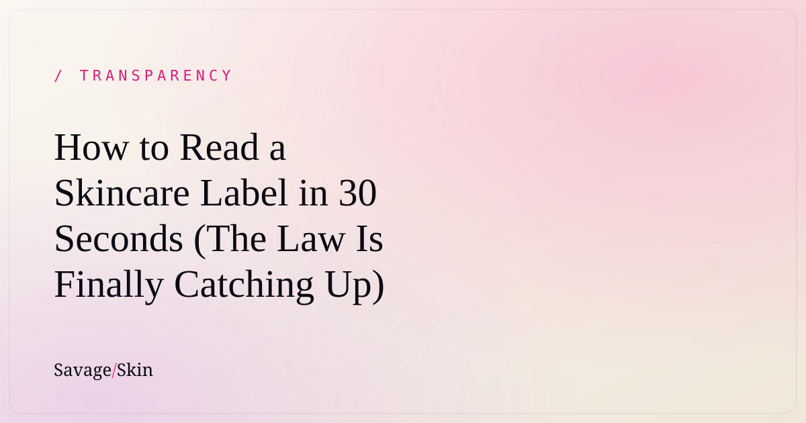

How to Read a Skincare Label in 30 Seconds (The Law Is Finally Catching Up)

On July 1, 2026, a new law took effect in Connecticut: cosmetics with intentionally added PFAS ("forever chemicals") can't be sold there unless the label says so and the state is notified. Maine and Vermont started similar rules in January. And under MoCRA — the biggest update to US cosmetics law since 1938 — the FDA is moving toward making brands name the individual allergens hiding inside the word "fragrance."
Translation: labels are slowly being forced to tell you the truth. We think that's the bare minimum. Here's how to read any skincare label yourself, in about 30 seconds, no chemistry degree required.
The 30-second label read
1. Ingredients are listed in order of amount
The first 5–6 ingredients are most of the product. If the ingredient a brand shouts about on the front is sitting at the bottom of the list — behind the preservatives — that tells you something. The top of the list is the truth. The front of the package is the marketing.
2. Find the word "fragrance"
One word — "fragrance" (or "parfum") — is legally allowed to stand in for a whole recipe of undisclosed scent ingredients. That's the loophole regulators are now closing. You don't have to avoid fragrance. You just deserve to know it's a category, not an ingredient.
3. Percentages beat adjectives
"Powered by vitamin C" means nothing without a number. Brands that actually put a meaningful amount of an active in the bottle usually say so — 10% glycolic, 15% L-ascorbic acid. Vague glow words are what you use when the number wouldn't impress anyone.
4. Long names aren't automatically bad
This one cuts the other way: sodium hyaluronate sounds scary and is just hyaluronic acid's salt form. "Chemical-sounding" isn't the same as "bad" — everything is a chemical, including water. The question is never can I pronounce it? It's do I know what it's doing here? A label you can interrogate is a label you can trust.
5. Check who's telling you
A brand that explains every ingredient in plain English — what it is, why it's there — is making itself easy to check. A brand that hides behind trademarked complexes and "proprietary blends" is making itself hard to check. Choose accordingly.
Why we care this much about labels
Savage Skin exists because of label frustration. Every ingredient we use is printed in plain English with what it does and why it's in there. Our lip treatment, Lip Service, gets the strictest version of that standard — because lip products are the one category of skincare you slowly, unavoidably eat. Our line: nothing in it you'd be afraid to swallow. (That's a transparency standard, not a snack suggestion.)
We didn't wait for Connecticut, Maine, Vermont, or the FDA to make us do this. You shouldn't have to live in the right state to know what's in your balm.
What the new rules actually change
- Connecticut (July 1, 2026): cosmetics with intentionally added PFAS must be labeled and reported to the state to be sold there.
- Maine & Vermont (January 1, 2026): similar restrictions on intentionally added PFAS in cosmetics.
- MoCRA (federal, ongoing): brands must back up the safety of every formula, and the FDA has proposed requiring fragrance allergens to be listed individually instead of hiding inside "fragrance."
None of this means your current products are dangerous — that's not our lane, and cosmetics can't legally make health claims anyway. What it means is simpler: the era of "just trust us" labels is ending. Read yours tonight. Count the vague words. You'll see the difference fast.
Frequently asked questions
What does "fragrance" on a label actually mean?
It's a legal catch-all that can cover many individual scent ingredients that don't have to be listed separately — for now. Under MoCRA, the FDA has been working on a rule to require individual fragrance allergens on labels.
Are PFAS banned in all cosmetics now?
No. Rules are state-by-state in the US. Maine and Vermont restricted intentionally added PFAS in cosmetics starting January 1, 2026, and Connecticut's labeling-and-notification requirement took effect July 1, 2026. Other states have their own timelines.
Does a long chemical name mean an ingredient is unsafe?
No. Every ingredient has a scientific (INCI) name, and plenty of gentle, well-studied ingredients sound intimidating — tocopherol is just vitamin E. What matters is knowing what each ingredient is doing in the formula, which is why we translate ours into plain English.
What should I look for first on a skincare label?
The first five or six ingredients (that's most of the bottle), whether actives come with real percentages, and whether the brand explains its ingredients anywhere. If the marketing and the ingredient list tell two different stories, believe the list.